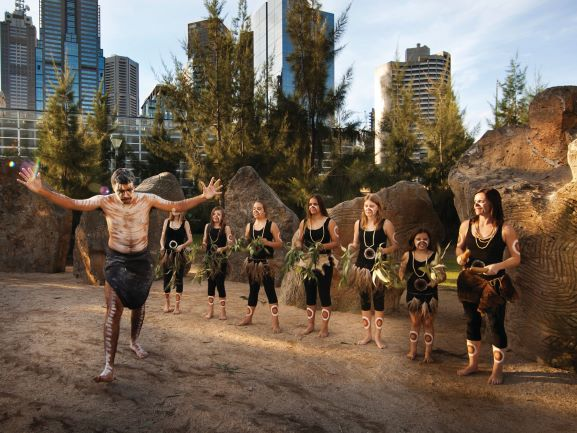
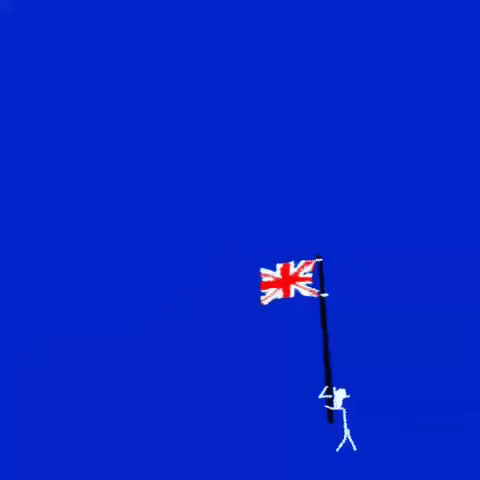

- Health and Wellbeing - Information regarding the health, wellbeing and education about Koori people, along with a basic introduction of their culture
- Food - Showcases an example of a traditional Indigenous food created by Billy
- Dance - Video of a traditional dance performed by Changken along with a brief description of the history
- Art - Contains a digital Indigenous-inspired artwork created by Changken using SVG (Scalable Vector Graphics) which will never lose clarity even if pixel scaling and zoom are altered.

- Started on the 22nd of March 2021.
- Finish date TBA, since Changken is nowhere to be seen.
- This entire DigiTech website project is due on the 22nd of April 2021, and we are on track to finish it on time.